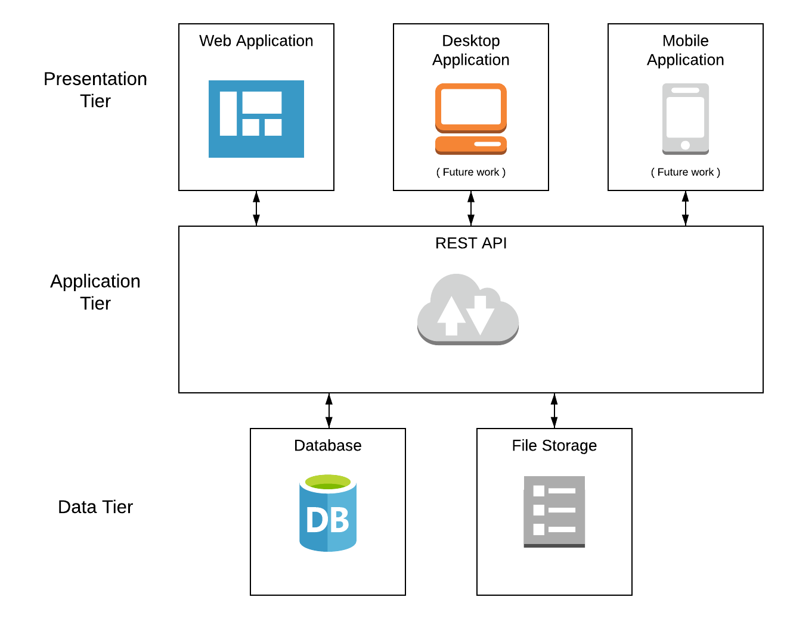

Purpose of this test plan is to establish a baseline for the testing efforts to be carried for this system. This plan will form the basis of minumum testing to be performed as well it will provide guidance on overall testing strategy including types of testing to be performed, various phases of testing, exit criteria etc.
This document should continue to evolve as system requirements and architecture/design continues to change, however it should always serve as the source of truth for all testing related activities.
The scope of this test plan is limited to Integration Testing and Acceptance/Validation Testing. This document will proide the guidance to testers to familiarize with the system as well outline the overall testing strategy.
All changes should be follow an increment in the version.
| Version Number | Date | Description |
|---|---|---|
| 1.0 | 12/5/2019 | Initial Release of the Test Plan |
Pet adoption & medical record system is a web application to consolidate medical history of a pet. It acts a central repository for all the records of a pet and also acts as a system to provide alerts for an upcoming/needed medication or procedure.
The system architecure is divided into three layers, which each layer performing a specific function. In this document we will plan to create a test plan which is adequate for performing Integration Testing and Validation Testing. The criteria for the test plan will totally be based off the high-level system design document.
CS5744 Fall - Project 2: Testing a Software System